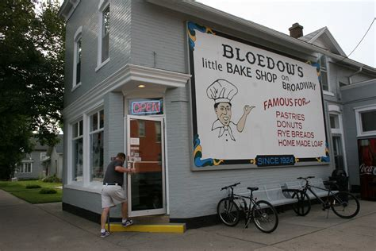
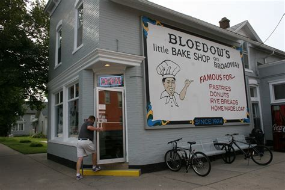

Beno's Deli
 

History of Bloedow's
The First Beno's Deli was in Lake City MN, started by Ron and Joan Shimbeno.
They had a location in Red Wing as well, but then both locations were closed.
A friend then bought the deli.
The deli burned down, and is now in the old city hall building in Winona.
Menu
Weekly Specials
- Monday - Bavarian Cream
- Tuesday - Lemon and Whip Cream
- Wednesday - Apple
- Thursday - Bavarian Cream
- Friday - Lemon/Whip Cream
- Saturday - Bavarian Cream
- Sunday - None